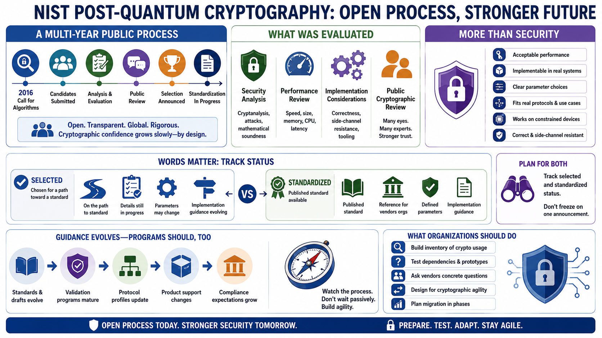

The NIST PQC Standardization Process
Connecting to LMS... Progress: in progress

Narration
NIST's post-quantum cryptography effort used a multi-year public process to evaluate candidate algorithms. That process included security analysis, performance review, implementation considerations, and public cryptographic review. The open process matters because cryptographic confidence grows slowly. Algorithms need to survive review, attempted attacks, implementation experiments, and scrutiny from different communities before they are suitable for broad reliance.
Security review is only one part of the evaluation. Algorithms also need acceptable performance, implementability, clear parameter choices, and behavior that can fit into real protocols. A strong algorithm on paper can still create deployment problems if keys are too large for constrained environments, signatures are too slow for common use cases, or implementations are difficult to make correct and resistant to side channels.
The words selected and standardized are not interchangeable. A selected algorithm has been chosen for a path toward a standard, but the final document, naming, parameters, and implementation guidance may still be in progress. A standardized algorithm has a published standard that organizations and vendors can reference more directly. Migration programs should track both statuses so planning does not freeze at a single announcement.
Organizations should also expect guidance to evolve. Standards, drafts, validation programs, protocol profiles, product support, and compliance expectations mature over time. A good PQC program watches the standards process, but it does not wait passively. It builds inventory, tests dependencies, asks vendors concrete questions, and designs cryptographic agility so future changes are manageable.